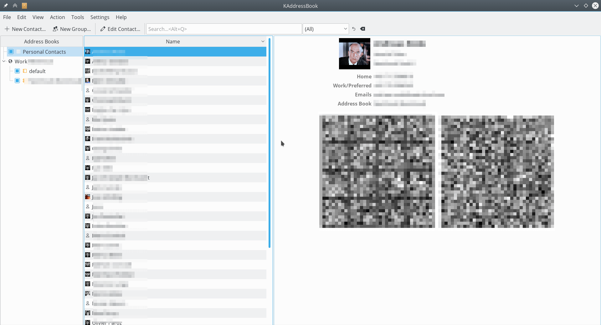
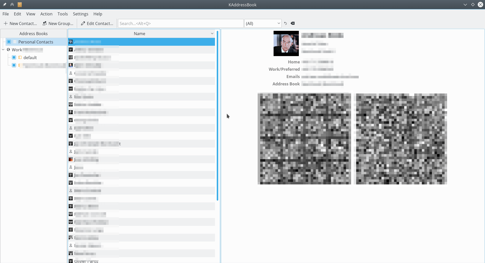

Synchronizace s aplikací KDE Kontact
KOrganizer a KAddressBook mohou synchronizovat váš kalendář, kontakty a úkoly s Nextcloud serverem.
To je možné udělat podniknutím těchto kroků:
Otevřete KOrganizer a v seznamu kalendářů (vlevo dole) klikněte pravým tlačítkem a zvolte „Přidat kalendář“.
Ve výsledném seznamu prostředků, vyberte
DAV groupware prostředek.

Zadejte své uživatelské jméno. Jako heslo, je třeba vytvořit heslo aplikace / token (Více viz).

Jako volbu serveru softwaru na podporu spolupráce zvolte
ownCloudneboNextcloud.

Zadejte URL adresu svého Nextcloud serveru a (pokud je třeba) popis umístění instalace (cokoli co přijde za první /, například
mujnextcloudvhttps://exampe.com/mujnextcloud). Poté klikněte na Další.

Nyní můžete spojení vyzkoušet, což pro úvodní spojení může chvíli trvat. Pokud to nefunguje, je možné se vrátit zpět a zkusit to napravit změnou nastavení.


Zvolte název pro tento prostředek, například
PráceneboDoma. Ve výchozím stavu jsou synchronizovány jak CalDAV (Kalendář) tak CardDAV (Kontakty).
Poznámka
You can set a manual refresh rate for your calendar and contacts resources. By default this setting is set to 5 minutes and should be fine for the most use cases. You may want to change this for saving your power or cellular data plan, so that you can update with a right-click on the item in the calendar list and when you create a new appointment it is synced to Nextcloud right away.

Po pár sekundách až minutách (v závislosti na rychlosti vašeho připojení k Internetu), naleznete své kalendáře a kontakty v KDE Kontact aplikacích KOrganizer a KAddressBook!
 
